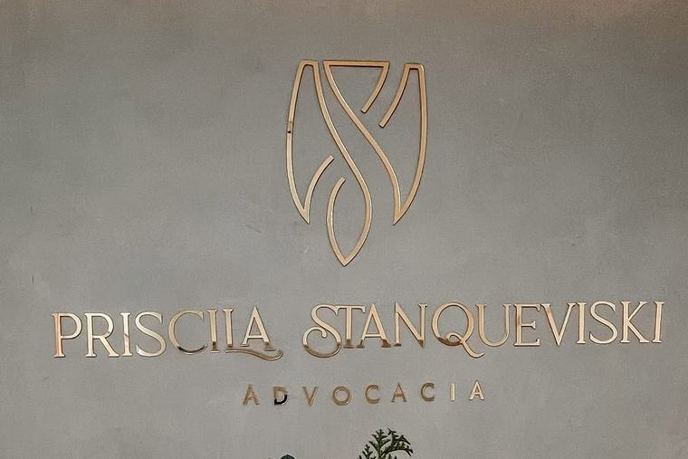

Eu poderia te dizer tudo o que tu quer ouvir.
Prefiro te dizer o que tu precisa saber.
Advocacia em Canoas, presencial e por vídeo. Os riscos, os limites e o que depende do juízo entram na primeira conversa.
- Onde
- Canoas, RS, e por vídeo
- Telefone
- (51) 99595-7590
O que eu não vou te prometer
Começa por aqui porque é o que separa uma orientação de uma venda. Se alguém te promete alguma destas quatro coisas, desconfia.
-
Que tu vai ganhar
Ninguém controla a decisão do juiz. Dá para avaliar a chance pelas provas e pela jurisprudência, e dá para dizer onde ela é fraca. Garantir resultado, não dá, e a OAB proíbe.
-
Quando a sentença sai
O prazo é do juízo, não do escritório. Colocar um problema na mão de um juiz significa aceitar o tempo do tribunal, e esse tempo não é meu para prometer.
-
Que processo é sempre o caminho
Entrar na Justiça nem sempre é a melhor escolha, e quase nunca é a mais rápida. Quando dá para resolver direto no cartório ou num acordo bem escrito, a velocidade é outra.
-
Só o que tu quer ouvir
Prefiro ser sincera agora do que alimentar expectativa que a realidade não vai atender. Os riscos e os limites entram na primeira conversa, não depois de assinado.
Áreas de atuação
À esquerda, como as pessoas chegam dizendo. Abaixo, como a coisa se chama no direito, que é o que muda o caminho.
- “Ele não paga a pensão do meu filho.”
- Execução de alimentosIntimação pessoal, protesto da decisão, penhora e, no rito próprio, prisão civil. Serve quando já existe decisão ou acordo homologado.
- “Eu quero me separar.”
- Divórcio, guarda, convivência e alimentosJudicial ou por escritura em cartório, conforme o caso. São quatro decisões distintas, e nem todas precisam de processo.
- “A gente combinou de boca sobre o meu filho.”
- Acordo formalizado e homologadoO combinado só sai caro quando não tem respaldo legal. Documento homologado é o que continua valendo quando a relação entre os adultos muda.
- “Eu preciso me proteger.”
- Proteção da mulherMedidas previstas em lei e orientação sobre o que a legislação passou a permitir, como a Lei 15.474, de julho de 2026, sobre aerossol de defesa pessoal.
- “Eu e meu sócio não temos regra para empate.”
- Acordo de sócios e cláusula de desempateSem regra clara de desempate, a operação trava, o clima pesa e quem sangra é o caixa. Contrato social não resolve isso: é outro documento.
- “Chegou uma notificação e a gente nunca formalizou nada.”
- Passivo trabalhista, cobrança e uso da marcaÉ a conta do acordo de boca. A maioria das empresas que chega com passivo, calote ou perda do direito de uso da própria marca achou que a informalidade era inofensiva.
- “Faz anos que a empresa não revisa o tributário.”
- Revisão do planejamento tributárioAnálise do regime adotado e discussão de cobrança que a empresa considera indevida.
- “Dá para resolver sem entrar na Justiça?”
- Caminho extrajudicialCartório ou acordo bem redigido. Nem sempre é possível, mas quase sempre vale verificar antes de ajuizar, porque tira o peso das costas mais rápido.
Como funciona o atendimento
Quatro etapas, nessa ordem. A decisão sobre o caminho vem depois de tu ouvir o que é incerto, não antes.
Tu escreve
Pelo WhatsApp, contando o que está acontecendo. Eu digo se é um caso que eu atendo e o que preciso ver.
A gente conversa
Presencial na sala 402, em Canoas, ou por videochamada, para quem está em outra cidade.
Tu ouve o que é incerto
Os riscos, as possibilidades e os prazos reais, que não dependem de mim, mas do juiz. Sem pressão e sem invenção.
Se escolhe o caminho
Processo, acordo formalizado ou cartório. Às vezes o mais rápido é o que não passa pelo juiz.
Perguntas frequentes
Respostas de caráter informativo, com a norma citada. Cada situação tem particularidade que só a análise do caso concreto revela.
Tu atende só em Canoas ou também on-line?
As duas formas. O atendimento presencial é na Avenida Boqueirão, 3166, sala 402, no bairro Estância Velha, em Canoas, RS. Quem está em outra cidade ou não consegue se deslocar é atendido por videochamada, com os documentos digitalizados. O primeiro contato pode ser pelo WhatsApp (51) 99595-7590.
Quanto custa contratar uma advogada?
Não existe valor único. Os honorários variam com a complexidade, o tempo de trabalho e a área envolvida, e a Tabela de Honorários da OAB/RS serve de referência mínima para os advogados do estado.
As regras de publicidade da OAB proíbem anunciar preço, então o valor não vai aparecer nesta página: ele é apresentado por escrito antes de qualquer contratação.
Base: Estatuto da Advocacia, artigo 22, e Provimento 205/2021 da OAB.O pai não paga a pensão do meu filho. O que eu posso fazer?
Se a pensão foi fixada em decisão judicial ou em acordo homologado, cabe execução de alimentos. O executado é intimado pessoalmente para, em três dias, pagar, provar que pagou ou justificar a impossibilidade. Sem isso, o juiz manda protestar a decisão e pode decretar prisão de um a três meses, cumprida em regime fechado.
Tem um limite que quase ninguém conta antes: por esse rito só entram as três prestações anteriores ao ajuizamento e as que vencerem no curso do processo. O atraso mais antigo continua devido, mas é cobrado por penhora e expropriação, que é um caminho mais lento. Saber disso antes muda a estratégia.
Base: Código de Processo Civil, artigo 528, caput e parágrafos 1, 3 e 7.Acordo de pensão e guarda feito só de boca vale?
Entre os pais, o combinado verbal vale enquanto os dois cumprirem. O problema aparece quando um muda de posição: sem documento não existe título para executar, e é preciso ajuizar ação de alimentos ou de guarda desde o começo.
Acordo escrito e homologado pelo juiz, com manifestação do Ministério Público, é o que permite execução direta. Não deixa o bem-estar de quem tu mais ama depender do bom humor alheio.
Divórcio dá para fazer em cartório, sem processo?
Dá, quando os dois concordam: o divórcio sai por escritura pública em tabelionato de notas, com advogado presente, e costuma levar dias em vez de anos.
Desde a Resolução 571/2024 do Conselho Nacional de Justiça, a existência de filhos menores ou incapazes já não impede, por si só, o divórcio em cartório, desde que guarda, convivência e alimentos estejam definidos em decisão judicial anterior. Se essas questões ainda não foram decididas, o caminho continua sendo o judicial.
Base: Código de Processo Civil, artigo 733, e Resolução 571/2024 do CNJ, de 27 de agosto de 2024.Advogado pode garantir que eu vou ganhar a causa?
Não. As normas de ética e de publicidade da OAB proíbem prometer ou garantir resultado, e nenhum advogado controla a decisão do juiz nem o tempo do tribunal.
O que se pode fazer é avaliar as chances pelas provas e pela jurisprudência, explicar os riscos e dizer com clareza o que é incerto. Promessa de causa ganha, dinheiro rápido ou custo zero é sinal de alerta, não de competência.
Base: Código de Ética e Disciplina da OAB e Provimento 205/2021.Minha empresa já tem contrato social. Precisa de acordo de sócios?
São documentos diferentes. O contrato social constitui a sociedade e vai à Junta Comercial. O acordo de sócios regula a relação entre as pessoas: como se decide em caso de empate, o que acontece se um sócio quiser sair, morrer ou se divorciar, e o que cada um pode ou não fazer fora da empresa.
Um contrato bem amarrado não é atestado de desconfiança entre os sócios, é maturidade. Sem regra de desempate, o impasse trava a operação.
Posso comprar spray de pimenta para me defender?
A Lei 15.474, publicada em 24 de julho de 2026, autoriza a comercialização, a aquisição e a posse de aerossol de extratos vegetais para defesa pessoal de mulheres maiores de 18 anos. O produto é de uso individual e intransferível e não pode conter substância de efeito letal ou de toxicidade permanente.
Não significa uso irrestrito. Capacidade, concentração e padrões de segurança serão fixados em regulamento, observadas as normas da Anvisa, e o uso só é lícito para repelir agressão injusta, atual ou iminente, de forma proporcional e moderada. Uso indevido gera responsabilização.
Base: Lei 15.474, de 2026, publicada no Diário Oficial da União em 24 de julho de 2026.
Quem vai cuidar do teu caso
Sou Priscila Stanqueviski, advogada inscrita na OAB/RS sob o número 123625. Atendo pessoas e empresas de forma presencial, no escritório do bairro Estância Velha, em Canoas, e por videochamada, para quem está em outra cidade.
O meu compromisso é ser clara desde o início: explicar os riscos, as possibilidades e os limites do processo. Não é raro ver profissional fazendo promessa só para fechar contrato, e garantia de resultado, prazo irreal e solução milagrosa convencem no começo e geram frustração depois. Prefiro ser sincera agora.
Quando o caminho mais rápido é um acordo bem escrito ou uma solução no cartório, é isso que eu vou te dizer, mesmo que dê menos trabalho para mim.
Nem tudo saiu como eu planejei. Ainda bem.
Registro e conformidade
- Inscrição
- OAB/RS 123625. Conferível na consulta pública do Cadastro Nacional dos Advogados, no site do Conselho Federal da OAB.
- Publicidade
- Esta página tem caráter meramente informativo, conforme o Provimento 205/2021 da OAB. Por isso não há preço, nota, avaliação de cliente, depoimento, comparação com outros profissionais nem promessa de resultado.
- Áreas anunciadas
- Estão descritas como áreas de atuação, não como especialidade. O título de especialista depende de registro próprio na OAB.
- Limites desta página
- O conteúdo não substitui a análise de um caso concreto e não constitui consulta jurídica.
Contato
Se tu quer entender quais caminhos existem para o teu caso, me escreve. O primeiro contato é para saber se é um caso que eu atendo.
- Telefone
- (51) 99595-7590
- Enviar mensagem
- @pristanqueviski.adv
- Escritório
-
Avenida Boqueirão, 3166, sala 402
Estância Velha, Canoas, RS, 92440-002